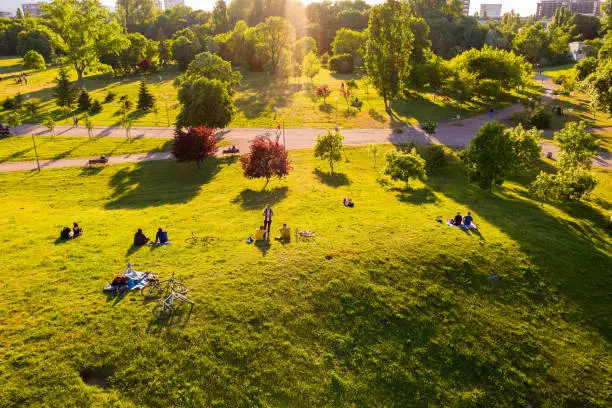

Inovações no Campo
O campo vem incorporando tecnologias modernas que aumentam a produção de alimentos e preservam o meio ambiente. Exemplos incluem uso de drones para monitorar plantações, sensores para medir a umidade do solo e sistemas de irrigação inteligentes.

Transformações na Cidade
Nas cidades, vemos o crescimento das hortas urbanas, energia renovável e sistemas inteligentes de transporte que ajudam a reduzir a poluição. Essas iniciativas trazem a natureza para o ambiente urbano e promovem a qualidade de vida dos moradores.

Sustentabilidade: A Conexão entre Campo e Cidade
A sustentabilidade é o ponto chave que une o campo e a cidade. O uso responsável dos recursos naturais, a redução de resíduos e a economia circular fazem com que as áreas rurais e urbanas se complementem para um futuro mais verde e saudável.
Conclusão
Inovar tanto no campo quanto na cidade é fundamental para construir uma sociedade equilibrada, que respeita a natureza e oferece qualidade de vida para todos. Juntos, podemos pensar e agir por um mundo mais conectado e sustentável.